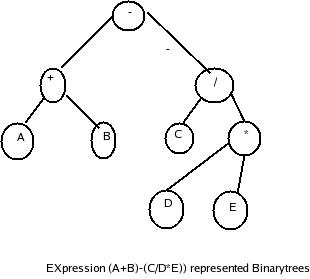

A binary tree is a tree in which each node has atmost two children ,a left child and right child .Thus the order of binary tree is 2.
A Binary tree is either empty or consists of
(a)a node (called the root node) and
(b) left and rightsub trees.
Both the subtrees are themselves are binary trees.

In the fig 4.3,node ais the root and also parent of the nodes B and C.Nodes D,F,H,I and j are leaves.
Interchanging the right and left subtrees results a new and different tree.That is binary tree is not symmetric tree structures.If two binary trees have same structure then they are said to be similar structure.
Binary trees structures are very useful in processing airthemetic expressions. and is used to evaluate the arithemetic expression.
Consider the following expression;
(A+B)-(C/(D*E))
If we traversal the tree in aparticular order we will get one of the basic three forms.